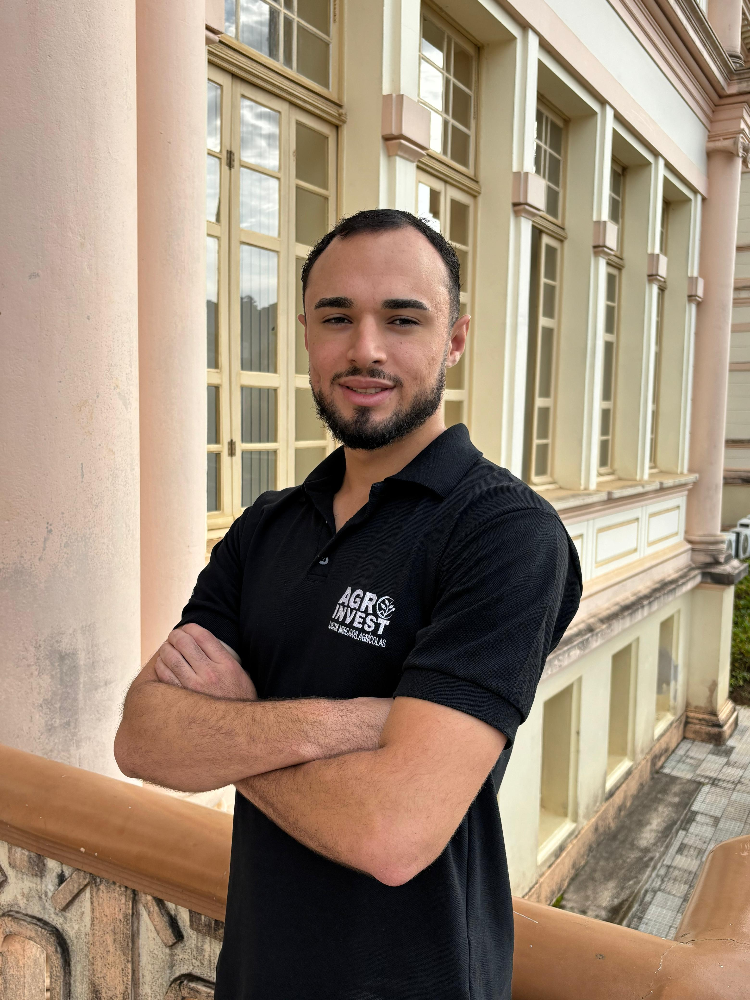
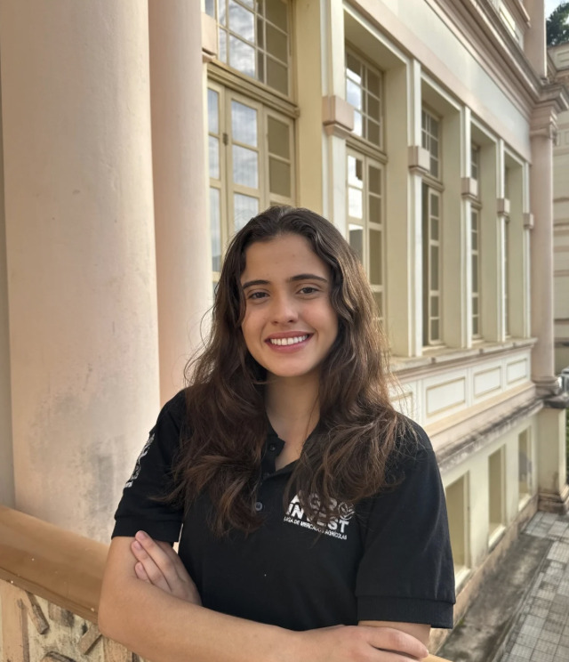
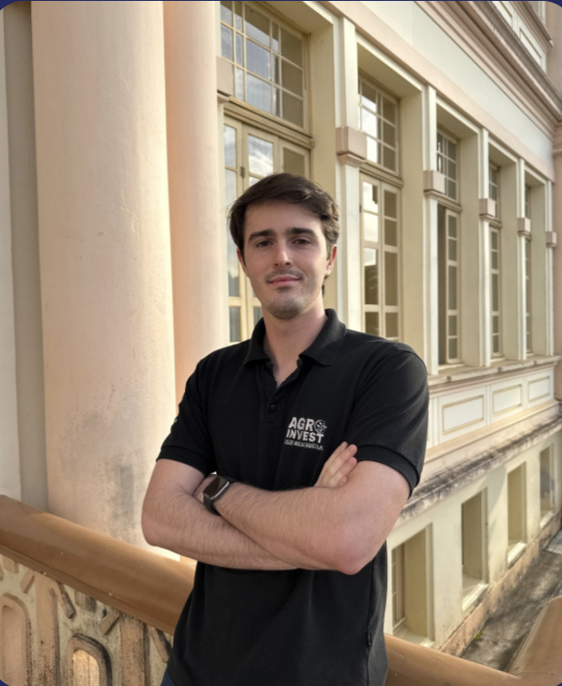
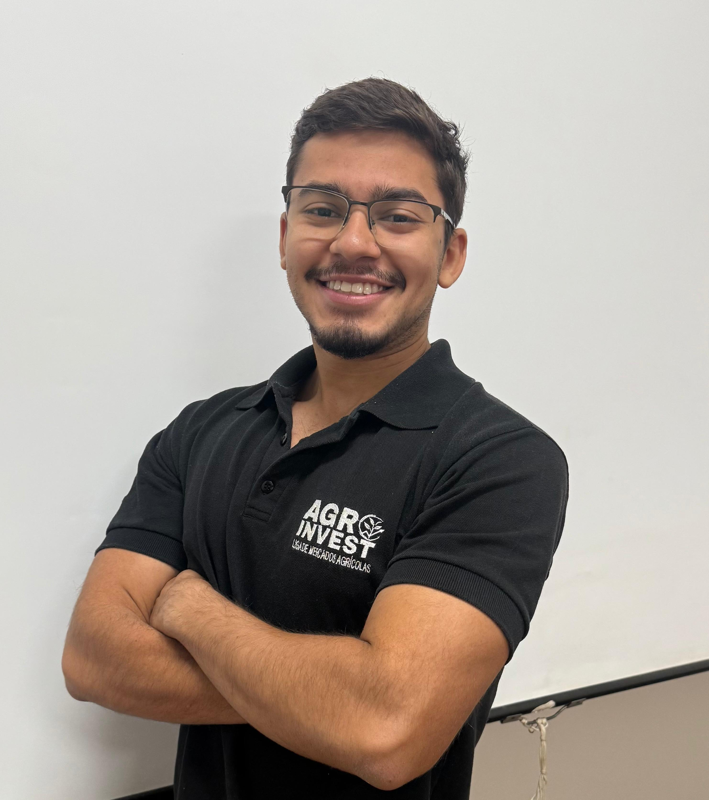
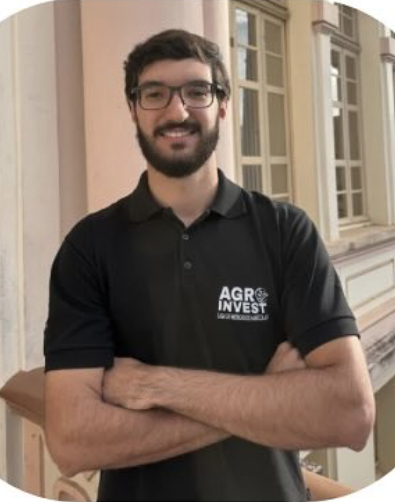
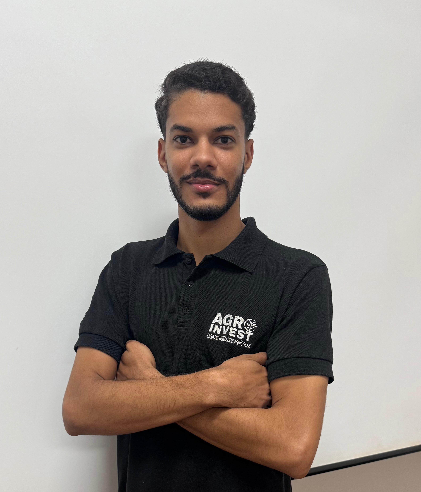
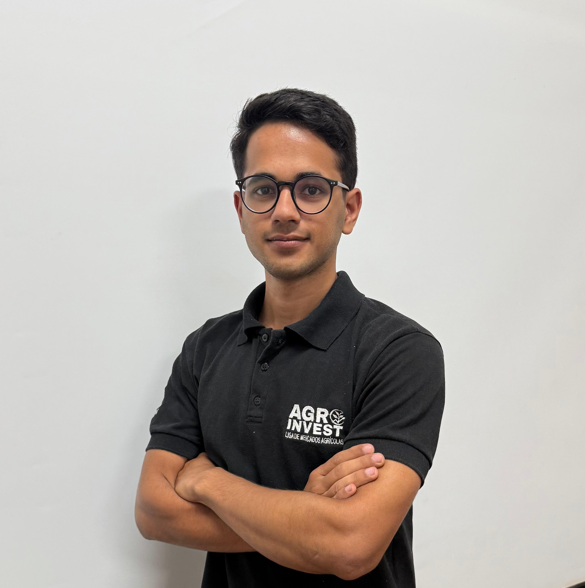
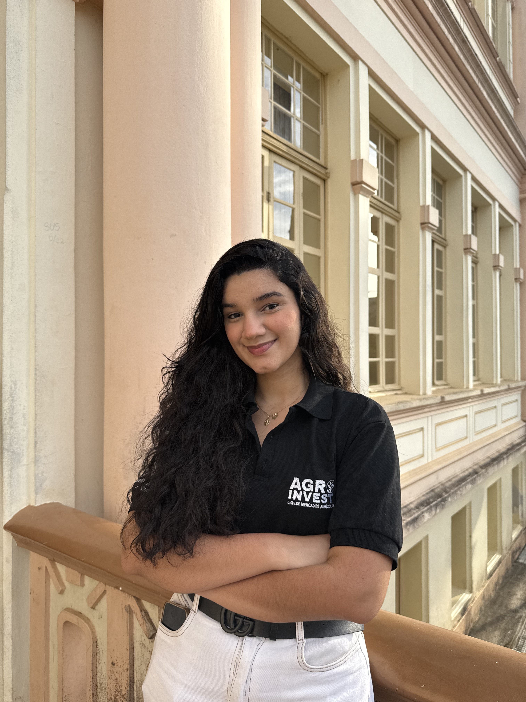
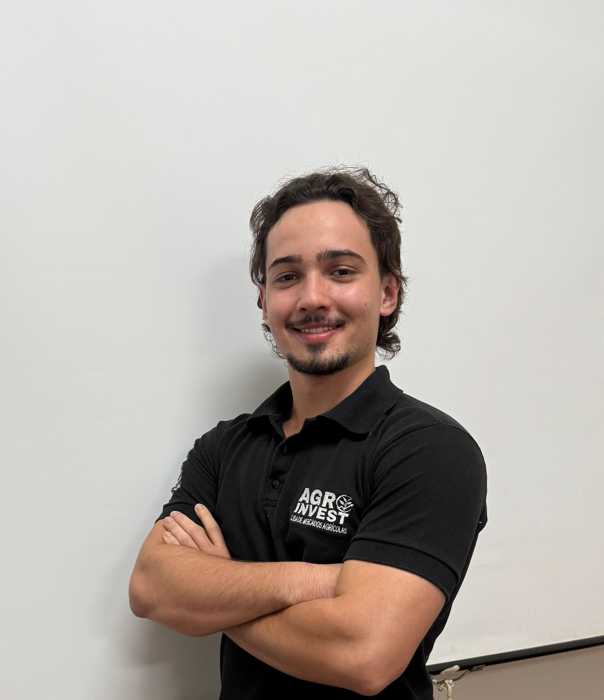
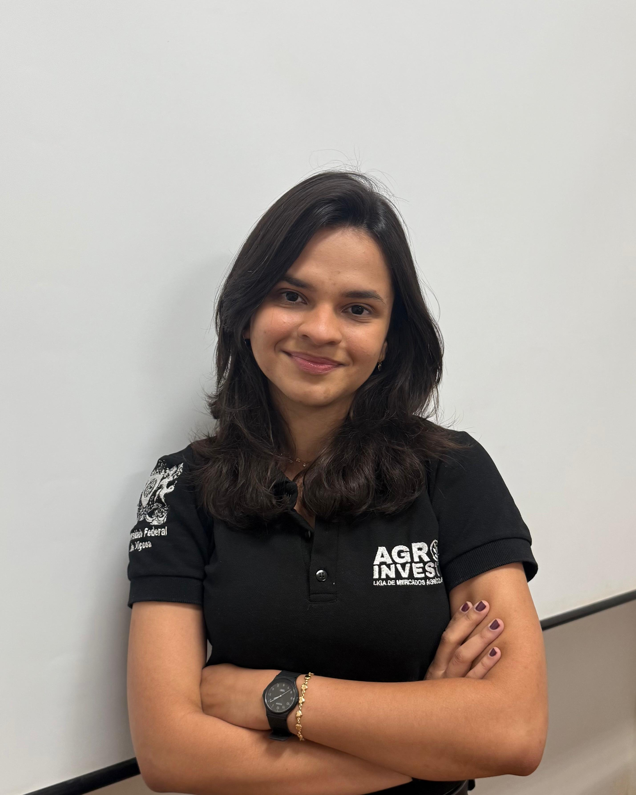

Bem-vindo à AgroInvest!
Seu portal de conhecimento sobre mercados agrícolas da UFV.
Aqui você encontrará informações, análises e dados atualizados para entender melhor o agronegócio.
Últimas Notícias do Agronegócio
Carregando as notícias...
Nosso Conteúdo
Carregando abas...
Preços de Mercado
Aqui você encontrará os preços atualizados das principais commodities e índices do agronegócio, fornecidos diretamente pelo CEPEA/ESALQ.
Dados fornecidos por: CEPEA/ESALQ
Logística do Agronegócio Brasileiro
Explore o mapa interativo dos principais portos de exportação. Clique nos marcadores para ver o volume de carga.
Clique em um marcador de porto no mapa para ver os volumes de exportação.
Conheça Nossa Equipe
Leonardo Bornacki de Mattos
Orientador
Orientador da AgroInvest desde 2024, possui graduação em Ciências Econômicas pela Pontifícia Universidade Católica de Minas Gerais (2002), mestrado em Economia Aplicada pela Universidade Federal de Viçosa (2004), doutorado em Economia Aplicada pela UFV (2008). Realizou pós-doutorado na University of Nebraska-Lincoln. Atualmente, é Professor Titular no Departamento de Economia Rural da UFV. Atua no ensino de graduação e pós-graduação, e em pesquisas na área de Economia, com ênfase em Econometria, Finanças Internacionais e Mercados de Commodities.

Johan Potrich
Presidente
Graduando em Agronomia com formatura prevista para 2027, possui 22 anos, natural de Brasília. Fundador da Liga, onde aprofunda conhecimentos na interação entre mercado financeiro e agronegócio, com foco em dinâmicas econômicas e projetos de crédito rural. Atua também como Gerente de Marketing na AgroPlus UFV. Possui inglês certificado (FISK) e intercâmbio no Canadá.

Alexandre Oliveira
Diretor de Projetos
Graduando em Agronomia (UFV, 2026) e Técnico em Eletromecânica (IFBA), com experiência em agricultura digital, inteligência artificial aplicada ao agro, gestão e mercados agrícolas. Sócio-fundador da AgroInvest (Mercados Agrícolas), foi vice-presidente do NEAP-UFV (2023). Gerente do projeto ConectarAgro na equipe AgroPlus-UFV e desenvolvedor do ICR e projetos de conectividade rural. Técnico do Agro Plus Brasil (+20 visitas). Foi coordenador de tecnologias no projeto Solo+ Fértil (Prefeitura de Canaã-MG). Bolsista CNPQ e FAPEMIG no laboratório de Biometria em análise de dados no Melhoramento Genético de Plantas.

Bianca Chaves
Diretora de Marketing
Graduanda em Agronegócio pela UFV, com formatura prevista para julho de 2028. Natural de Lagoa Dourada (MG), é uma das sócias da SafraVision, startup incubada no tecnoPARQ/UFV, e Diretora de Marketing da AgroInvest. Atuou na Empresa Júnior de Agronegócio (Agregar) e possui experiência prática no agro, em lojas de peças agrícolas e silo de armazenagem de grãos.

Luiz Bergamaschi
Diretor de Gestão de Pessoas
Graduando em Agronomia pela Universidade Federal de Viçosa, com formatura prevista para janeiro de 2026. Natural de Brasília – DF, possui vivência prática em fazenda, atuando na gestão de processos e equipes, operação de maquinários agrícolas, implantação de tecnologia de telemetria e GPS e planejamento de safra. Foi líder da equipe vencedora do Programa Acelera – Tecnoparq/UFV e membro fundador da AgroInvest – Liga Acadêmica de Mercados Agrícolas. Possui inglês avançado, certificado de proficiência MET (Michigan English Test), e domínio intermediário de Excel, Power BI e softwares de telemetria agrícola.

Arthur Araújo
Assesor de Projetos
Estudante de Agronomia pela UFV, com perfil empreendedor, visão estratégica e foco em resultados. Fundador da APCY Studio, com experiência em vendas, marketing digital e gestão de projetos. Entusiasta do agronegócio e do mercado, busca integrar inovação e campo para gerar valor em diferentes contextos. Proativo, disciplinado e com facilidade em lidar com pessoas, liderança de equipe e desenvolvimento de soluções criativa.

Enrico Cavichioli
Assesor de Gestão de Pessoas
Graduando em Agronomia pela Universidade Federal de Viçosa, com formatura prevista para Janeiro de 2026. Natural de Sorriso - MT, onde possui vivência prática a campo com foco no manejo de soja e milho. É membro fundador da AgroInvest, na qual exerceu a função de Presidente. Possui experiência em mercados, tendo realizado estágio na BASIS. - Gestão de Negócios e Consultoria de Mercado, onde atuou na mesa de grãos e no desenvolvimento de estudos com foco em basis e relação de troca de fertilizantes. Possui inglês fluente, com certificado de proficiência FCE.

Guilherme Alves
Assesor de Marketing
Graduando em Agronegócio pela universidade Federal de Viçosa, com formatura prevista para 2028 e Técnico em Edificações (IFNMG, 2023). Natural de Pirapora - MG.

João Emílio
Assesor de Gestão de Pessoas
Graduando em Agronomia e Técnico em Agropecuária com vivência prática no campo e forte interesse em soluções estratégicas para o desenvolvimento sustentável do agronegócio. Sou proativo e me envolvo em projetos que buscam otimizar recursos, gerar impacto no campo e conectar inovação à realidade rural brasileira.

Luan Oliveira
Assesor de Marketing
Graduando em Agronomia (UFV, 2026) e Técnico em Eletromecânica (IFBA), com experiência em gestão, mercados agrícolas e negócios. Fundador da Agroinvest-UFV (liga de mercados) e Diretor Presidente do NEAP/UFV. Atuou no tecnoPARQ-UFV (inteligência de mercado) e como Gerente Comercial na AgroPlan-UFV (prospecção). Experiência prática como Assessor na AgroPlus UFV (projetos ABAPA/Oeste BA) e estágio no MT (AgroPlus Brasil, +35 visitas). Bolsista Pibex em análise de viabilidade econômica.

Maria Fernanda
Assesora de Projetos
####################. Graduando em Economia pela UFV.

Nathan Scopel
Assesor de Marketing
Graduando em Agronomia (UFV, 2028) e Técnico em Química (IFES Aracruz), com vivência de campo e foco em gestão e mercados agrícolas. Atua na AgroInveste-UFV (liga de mercados agrícolas) como Assessor de Marketing e na Liga de Empreendedorismo de Viçosa como Assessor de Projetos. Participou do programa de aceleração Avança Café e do grupo CoffeeTec (projetos e finanças). Busca integrar técnica, inovação e negócios para gerar valor no agronegócio.

Raianne Silva
Assesora de Projetos
Graduanda em Agronegócio pela Universidade Federal de Viçosa (UFV), com formatura prevista para julho de 2028. Natural do Rio de Janeiro, 25 anos. Atuou como Projetista em uma empresa de assistência técnica, com foco na obtenção de crédito rural. Foi Gerente de Projetos na Empresa Júnior Agregar (UFV) e realizou estágio interno em análise de custos nas UEPEs. Atualmente, integra a AgroInvest UFV como Assessora de Projetos.
Sobre Nós
A AgroInvest - Liga de Mercados Agrícolas da UFV foi oficialmente fundada em 23 de novembro de 2022, na Universidade Federal de Viçosa. Nascemos como uma organização estudantil impulsionada pelo objetivo comum de aprofundar o estudo e a compreensão das dinâmicas que regem o mercado do agronegócio.
A Liga surgiu a partir da iniciativa de estudantes do curso de Agronomia, mas hoje conta com uma equipe multidisciplinar, composta por membros de diversos cursos da UFV, o que enriquece nossas análises e projetos.
Nossa missão é estudar os conceitos fundamentais dos mercados agrícolas, analisando como diferentes cenários micro e macroeconômicos afetam o valor das commodities, e disseminar informações precisas e relevantes para capacitar a comunidade acadêmica e externa sobre o que move este setor.
Mais do que apenas observar o mercado, a finalidade da AgroInvest é capacitar seus membros nas áreas de economia, mercado de commodities, derivativos e finanças aplicadas. Buscamos desenvolver uma visão técnica e analítica que auxilie na tomada de decisões estratégicas relacionadas à comercialização, gestão de risco e administração de propriedades agropecuárias.
Para conectar o rigor acadêmico da UFV aos desafios reais do mercado financeiro e do agronegócio global, realizamos uma série de atividades. Nossos pilares incluem o desenvolvimento de projetos práticos realizados em parceria com empresas do setor, relatórios técnicos e estudos contínuos sobre logística e gerenciamento, complementados pela realização de eventos, palestras, workshops e publicações que enriquecem o aprendizado e conectam mentes interessadas no futuro do agronegócio.Contato
Tem dúvidas, sugestões ou interesse em fazer parte da Agroinvest? Entre em contato conosco!
Email: agroinvestufv@gmail.com
Siga-nos nas redes sociais para ficar por dentro de nossas atividades:
- Instagram: @agroinvestufv
- LinkedIn: Agroinvest UFV